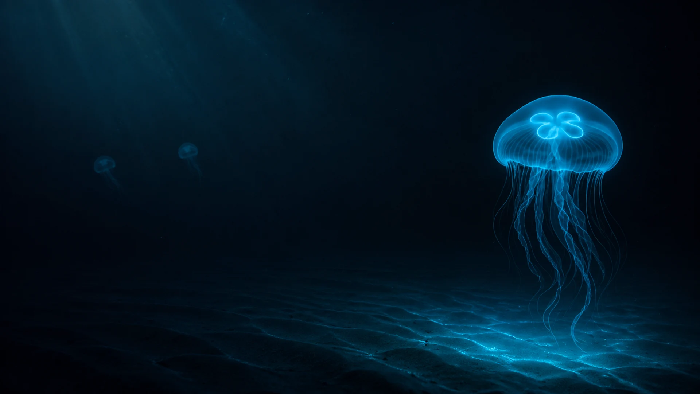
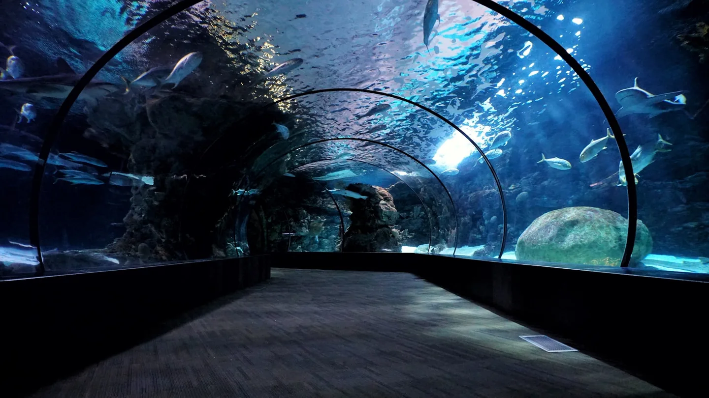
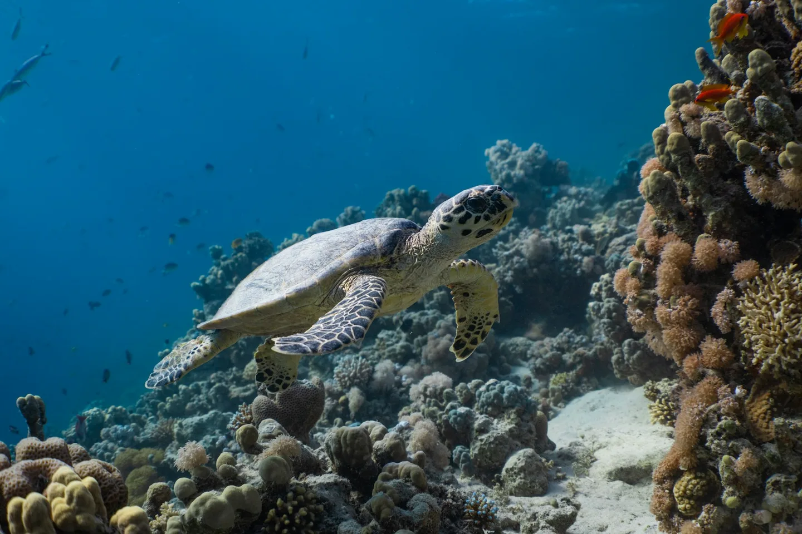
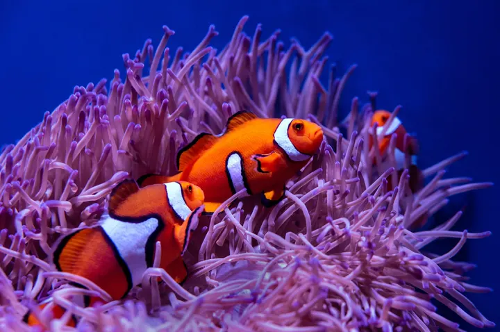
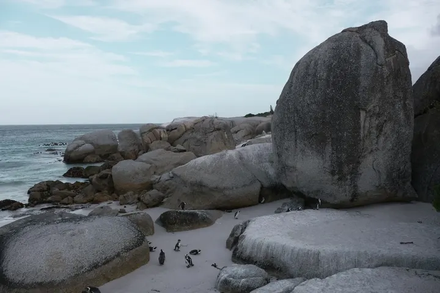
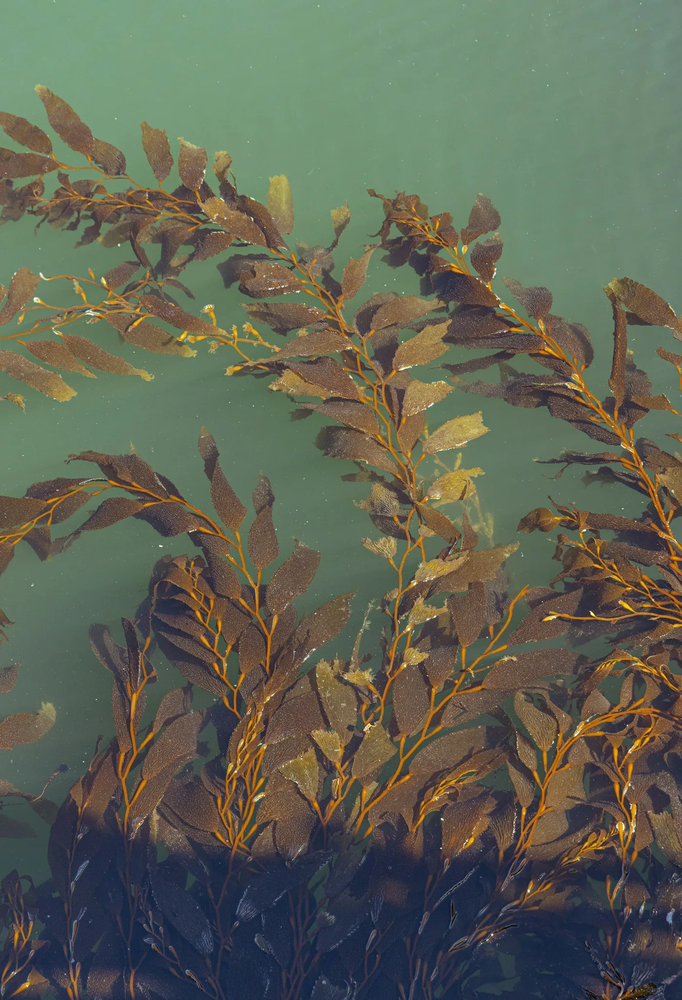

A DIFFERENT WORLD AWAITS
Dive beneath
the ordinary.
Leave the city above. Discover six extraordinary
worlds below the surface.
Where darkness comes alive.
Some worlds
have to be
felt.
The city fades. The light changes.
And suddenly, you’re somewhere else.
Follow a single route from the sunlit Mediterranean to the quiet glow of the deep. Meet the creatures that make the ocean extraordinary, and discover why their world matters to ours.
Find your moment of wonder
AND THE EXTRAORDINARY.THE TUNNEL / ZONE 03
Six worlds.
Endless wonder.
Every environment changes the way you see the ocean.
Choose a world to take a closer look.
FOLLOW THE CURRENT
A journey
with depth.
From the lagoon to Penguin Island, each space reveals another side of marine life. Explore the exhibition model and choose where your curiosity takes you.
Move your pointer to change perspective.
Use the numbered buttons to explore each environment.
A visit.
A lasting feeling.
Get closer, stay longer, ask more.
Find the experience that speaks to you.
Experience prices are sample rates for this portfolio concept. No live availability is displayed.

ONE OCEAN. EVERY ONE OF US.
Wonder is
where care begins.
See the ocean differently. Leave with a deeper connection to the habitats, creatures and delicate relationships beneath its surface.
Start with a visitLess planning.
More exploring.
Pick a day. Bring your curiosity.
We’ll take you beneath the surface.

SMALL CREATURES.BIG PERSONALITIES.
Choose your moment
Weekdays 09:30–19:00
Weekends 09:00–20:00
Last entry one hour before closing.
Find us by the water
Molo San Vincenzo
Port of Naples, Italy
A route for everyone
Step-free routes, space for pushchairs and quieter visiting options.
Curious?
Good.

How much time should I allow?
Allow around two to three hours for the six environments. You can take the route at your own pace; add extra time for a guided experience.
What does an entry ticket include?
Standard admission covers all six environments, including the underwater tunnel and touch pool. Guided experiences can be added separately.
Is the aquarium suitable for children?
The route is designed for all ages. Children under three enter free in this concept. Individual experiences have their own age guidance, shown before you add them.
Can I take photographs?
Yes. Keep your flash off, give other visitors space and follow any instructions at individual exhibits.
Can I book a real visit here?
This is an independent portfolio concept, not an operating aquarium website. The visit planner demonstrates the booking experience. It does not reserve places, collect personal details or process payments.

THE OCEAN IS CLOSER THAN YOU THINK.